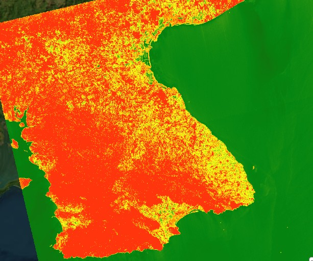
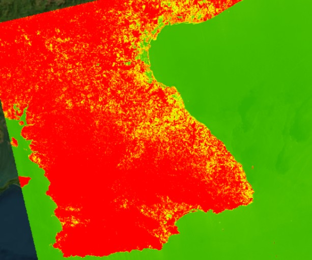
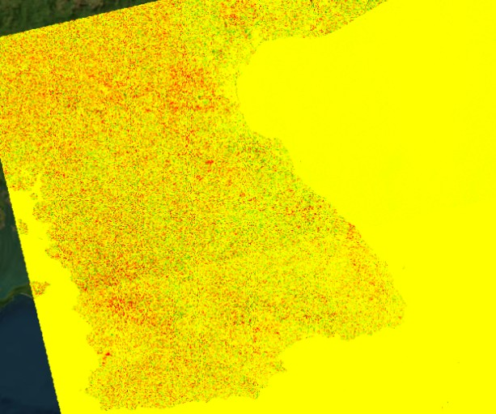

// ACTIVE SENSING
It brings its own light
NISAR does not take photographs. It sends microwave pulses to the ground and records the echo, day or night, through the clouds that so often cover Panama.
On October 9, 2026, a magnitude 7.7 earthquake struck the heart of the Azuero Peninsula. 747 kilometers above, a radar satellite was watching. This is what NASA-ISRO's NISAR reveals about a land that moved.
At 12:56 p.m., the Azuero-Soná fault ruptured near Pitaloza Arriba, about 39 kilometers northwest of Tonosí. The two sides of the fault slid horizontally past each other and broke the ground along roughly 90 kilometers, from the hills of Herrera to the coast of Mariato.
NISAR does not take photographs. It sends microwave pulses to the ground and records the echo, day or night, through the clouds that so often cover Panama.
The strength of the echo depends on how rough and how wet the surface is. Its long wavelength also reaches through vegetation.
Comparing passes over the same place reveals what changed on the surface between two dates.
Two NISAR radar images of the peninsula: one from July, months before the earthquake, and one from October, the month it struck. Drag the star to compare.


The strength of the radar echo returned by each point of the surface (NISAR GCOV product). Green marks weak returns, such as calm water. Yellow and red mark progressively stronger returns from rough or wet ground.
In July, yellow tones dominate large parts of the land. In October, red areas expand across the peninsula, most strongly toward the southwest.
A change in the echo means the surface itself changed: its roughness, its moisture or its cover. The question is what caused it.
Subtracting the July image from the October image, pixel by pixel, produces a change map. Where nothing changed, the result is close to zero.

Yellow: little or no change. Red and green: areas where the radar echo decreased or increased.
On average, the difference is almost zero: most of the peninsula returned a similar echo in both months. The change is concentrated in specific areas. The southern sector shows about 60% more spread than the northern one, meaning stronger and more frequent changes. Extreme values usually come from isolated pixels, so the spread is the more reliable indicator.
The largest variations, with extensive red areas in the October image.
Clear changes far from the epicenter: the effects were not confined to one spot.

An interferogram (NISAR GUNW product) compares two passes only 12 days apart, October 2 and October 14. Each full cycle of colors represents about 12 centimeters of ground motion.
Bands of color that crowd together near the fault. The tighter the bands, the more the ground moved.
With only 12 days between images, seasonal effects are minimal. What remains is the earthquake itself.
Radar responds to roughness and moisture. Between July and October, more than one thing changed on the surface of Azuero.
Thousands of landslides, cracks in the ground and damaged structures changed the roughness of entire hillsides, especially near the fault.
October is one of the wettest months in Panama. Wet soil reflects more radar energy, which can turn large areas red without any shaking.
Plants grow, fields are harvested and pastures change between seasons, and each change alters the echo.
Images taken from slightly different orbits or angles can show small differences that are not real changes on the ground.
The next step: separating these effects. Comparing passes only 12 days apart, or measuring ground motion with interferometry, isolates the signal of the earthquake from the changes of the season.
The shaking lasted less than a minute, but the surface of Azuero keeps changing. NISAR returns every 12 days, and every pass opens new questions.
Faults keep adjusting for weeks or months. A series of passes can reveal this slow, silent motion.
Weakened hillsides can be monitored through the clouds of the rainy season.
Landslide debris in riverbeds raises the risk of flooding downstream.
In Isla Cañas, the ground subsided and seawater reached the farmland. Radar can track the coastline.
Maps of change can help decide where to inspect, where to rebuild and where not to.
The Earth keeps the marks of what happened.
Science helps us read them.